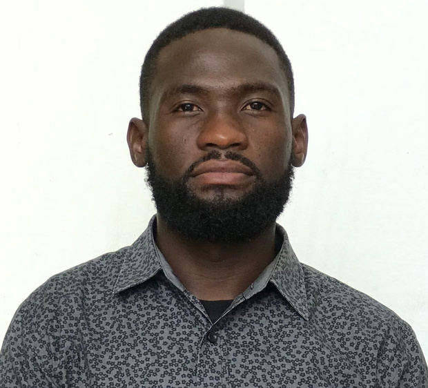

Analytical Thinking
Breaking down technical challenges and finding practical solutions.
Hello, I'm Edson.
Computer science graduate with a growing passion for cybersecurity, network security, and building a safer digital world.

A security-first mindset
A FOUNDATION IN TECHNOLOGY
My journey in technology began with computer science and grew through hands-on experience helping people solve technical problems. Those experiences strengthened my interest in how systems work, how they fail, and how they can be protected.
Today, I'm developing my knowledge of cybersecurity, networking, and information protection. I believe that meaningful technology starts with curiosity, practical thinking, and a commitment to continuous improvement.
More about my journey ↗Breaking down technical challenges and finding practical solutions.
Learning to recognize risks and understand digital protection.
Building knowledge through study, practice, and new challenges.
A growing technical foundation, real-world customer support experience, and the determination to keep improving.
Computer systems, Windows, software, troubleshooting, and everyday technical support.
Foundational security concepts, data protection, risk awareness, and ethical security practices.
Developing an understanding of networking concepts and the principles of securing connected systems.
Clear communication, customer assistance, teamwork, and structured approaches to problems.
MY APPROACH — LEARN THE SYSTEM. UNDERSTAND THE RISK. FIND THE SOLUTION.
A space for practical projects that demonstrate technical growth, thoughtful design, and a problem-solving mindset.
A proposed educational resource for exploring online threats, safer digital habits, and fundamental security practices.
CONCEPT PROJECTA proposed dashboard interface for organizing system status, technical observations, and troubleshooting information.
CONCEPT PROJECTThe projects above are concept ideas, not claims of completed production systems. Replace them with working projects as your portfolio develops.
MY PROFESSIONAL JOURNEY
Assisted customers with technology products, explained device features, and helped address basic technical questions. Developed communication, product knowledge, and problem-solving skills.
Helped maintain computer lab operations, assisted with basic hardware and software issues, and supported users with computer access and troubleshooting.
INUKA · November 2015 – March 2021
Academic foundation in computer science and related technical concepts.
Independent and online learning in introductory cybersecurity, network security, IT fundamentals, and information protection.
I'm interested in connecting with people, exploring opportunities, and continuing to grow in the world of IT and cybersecurity.
Start a conversation ↗